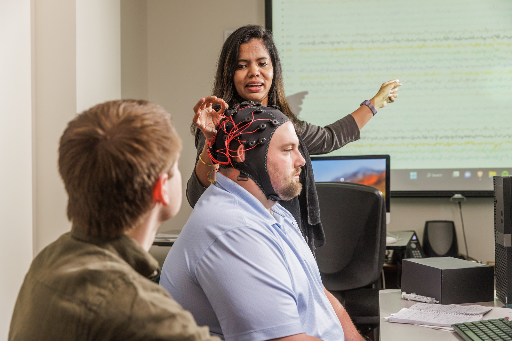
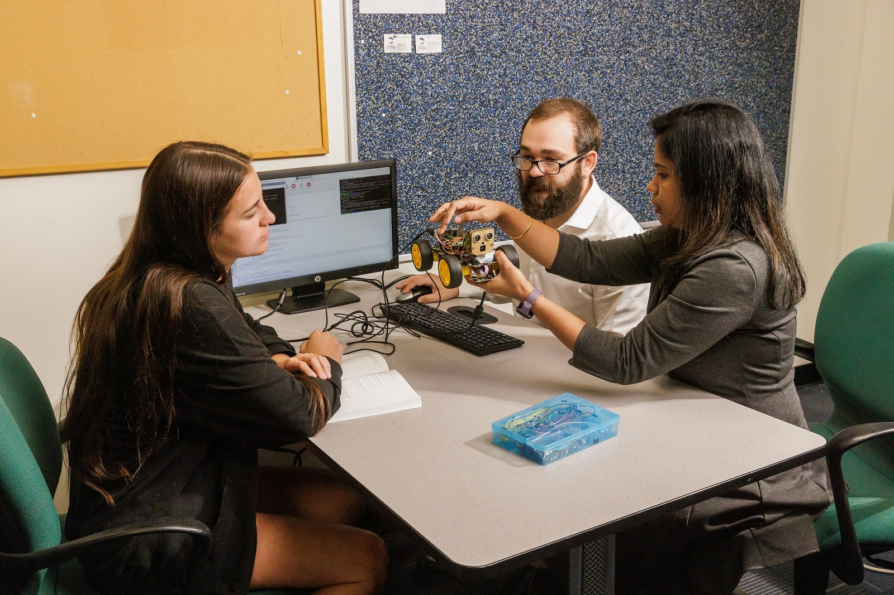

Georgia Southern University
Somatic Artificial
Intelligence Laboratory
Translating high-dimensional biological signals and black-box theory into interpretable, clinical bedside deployments.
Our Approach
Bridging Mind, Body, and Machine
We solve complex analytical problems that present critical challenges to modern healthcare. By combining deep technical expertise in machine learning with high-density neurophysiological monitoring, we capture the intricate temporal signatures of the human body.
From integrative oncology to neurodevelopmental informatics, our frameworks are designed to be equitable, interpretable, and ready for real-world clinical deployment.

Defining Innovations
Real-World Somatic Data Acquisition
True AI innovation requires pristine, real-world data. The SAIL utilizes advanced biometric imaging, extremely high frequency (EHF) bioresonance, and wireless EEG systems to capture dynamic cognitive states during active tasks.
This hands-on data acquisition allows us to move beyond standard datasets, pioneering custom multimodal pipelines that fuse temporal signals with spatial phenotyping.

Life at SAI
A Collaborative Research Ecosystem
The SAIL is unique because we put computational modelers, data engineers, and translational medical researchers in the exact same room.
We offer a vibrant, rigorous atmosphere where students and researchers collaborate directly on hardware calibration, algorithmic design, and data pipeline optimization. It is this culture of shared knowledge that drives our most significant breakthroughs.

Community Impact
Inspiring the Next Generation
Our commitment extends beyond the university campus. The SAIL is deeply invested in STEM outreach, bringing the fundamentals of computer science, signal processing, and AI to younger students in our community.
By demystifying technology and providing hands-on mentorship, we aim to build a diverse and passionate pipeline of future innovators and engineers.

Passionate About Research?
If your interests align with ours — multimodal AI, neurophysiological sensing, clinical decision support, or translational machine learning — we'd love to hear from you.
Send us your research statement and CV and let's start a conversation.
sail@georgiasouthern.edu